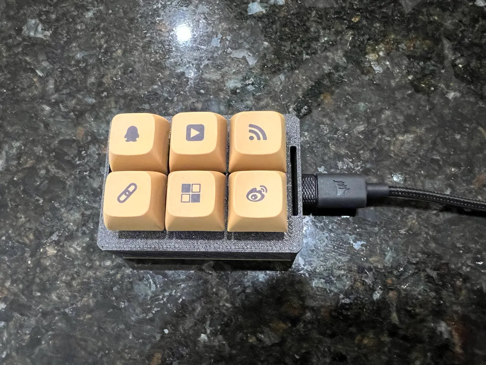

Projektin esittely
ESP32-makropad on pieni ohjelmoitava näppäimistö, jonka painikkeille voidaan määrittää erilaisia toimintoja.
Makropadia voidaan käyttää esimerkiksi ohjelmien, pelien ja muiden tietokoneen toimintojen ohjaamiseen.
ESP32-makropad on pieni ohjelmoitava näppäimistö, jonka painikkeille voidaan määrittää erilaisia toimintoja.
Makropadia voidaan käyttää esimerkiksi ohjelmien, pelien ja muiden tietokoneen toimintojen ohjaamiseen.

Ainakin: